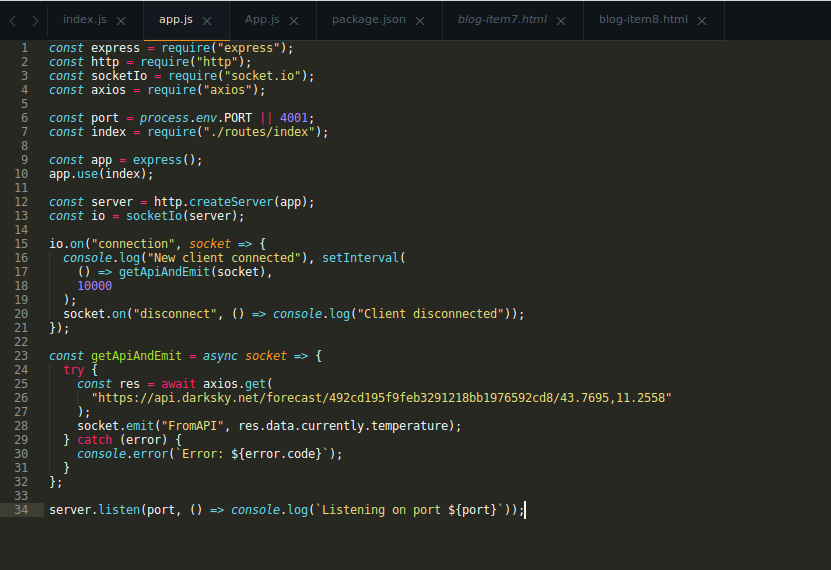

Going real time with Socket.IO, Node.Js, and React
What you will learn
What a WebSocket is
How to Use Socket.IO and Node.js alongside with React
Requirements
The latest version of Node.js is available from the official website.
If you use Linux, you should absolutely check out Nodesource: they offer Node.js 8.x.x and NPM 5.x.x
Last but not least, if you haven't got an API key from DarkSky yet, go grab one: we will use the DarkSky API later on inside our ExpressJS application.
The WebSocket protocol, Node.js, and Socket.IO
WebSocket is basically an internet communication protocol with a relevant interesting feature: it provides a full-duplex channel over a single TCP connection.
With WebSockets, a client and a server will be able to talk to each other in real time, kind of like they were involved in a telephone call: once connected, a client will be able to receive data from the server, without any need to continuously refresh the web page. On the other hand the server will also be able to receive data in real time from the client inside the same connection.
What's more interesting is the WebSockets ability to work with an event-driven model: both the server and the client can react to events and messages.
WebSockets opened up an entire world of opportunities for web developers. If you're wondering how to implement this fantastic tecnology into your Node.js applications, well, the answer is Socket.IO, one of the most popular real-time engines for Node.js.
Socket.IO works mostly by the means of Node.js events: you can listen for a connection event, fire up a function when a new user connects to the server, emit a message (basically an event) over a socket, and much more.
Socket.IO is used by countless companies and developers. It found its way through instant messaging applications, real-time analytics and monitoring, and it is used also for streaming and document collaboration.
However one thing to keep in mind is that Socket.IO is not an WebSocket implementation.
The authors state that "Socket.IO indeed uses WebSocket as a transport when possible [..] but a WebSocket client will not be able to connect to a Socket.IO server, and a Socket.IO client will not be able to connect to a WebSocket server".
Besides that, the framework behaves exactly like WebSockets and here lies its power: with this in place and with a basic understanding of the WebSocket procotol, it's time to get our hands dirty.
Building a real-time server: scaffolding the project
To start with, create an empty directory named socket-io-server:
mkdir socket-io-server
then move inside the newly created directory:
cd socket-io-server
and initialize the package.json by running:
npm init
We won’t publish any module to NPM so you can safely accept the default choices and just move on.
We also need to install Socket.io, which is the main dependency of our project, ExpressJS, and Axios. Express will help us building the server and Axios will be used to make HTTP requests to the DarkSky API:
npm i axios express socket.io
Building a real-time server: the code
You might be tempted to put a call to DarkSky inside the componentDidMount of a React component. Maybe you should poll the API every 10 seconds with a call to setInterval directly inside componentDidMount?
Yes I'm guilty, I've done things like that in the recent past, and you must remember to clean the interval every time the component gets unmounted. Luckily, there are better ways: in our case, a simple real-time server will get the job done.
The server will use Socket.IO to emit a message every 10 seconds and the client will listen for the same message over a real-time socket. Sounds neat? It is.
Am I going to put React into the mix when I could have simply rendered the HTML with Pug or Jade? Yes, because it is very interesting to see how React can work alongside with Socket.IO.
Create a file named app.js inside your project's directory. This will hold the actual server:
The code above should be no mistery for you: it is a bunch of requires followed by the instantion of a new ExpressJS application. What's rather interesting there is the call to socketIo() to initialize a new by passing in the server object. By doing so we have wired up the ExpressJS server to Socket.IO.
Crea un archivo llamado index.jsdentro del routesdirectorio:
How does Socket.IO works by the way?
The first and most important method you will encounter while working with Socket.IO is on(). The on() method takes two arguments: the name of the event, in this case "connection" and a callback which will be executed after every connection event. on() is nothing more than a core Node.js method tied to the EventEmitter class.
The connection event returns a socket object which will be passed to the callback function. By using said socket you will be able to send data back to the client in real time.
If you remember, Caty wants to know the temperature every 10 seconds: we can use setInterval inside the callback, and inside setInterval we can use another arrow function which will call the getApiAndEmit function we saw earlier. The code should be really straightforward:
io.on("connection", socket => { console.log("New client connected"), setInterval( () => getApiAndEmit(socket), 10000 ); socket.on("disconnect", () => console.log("Client disconnected")); });
Notice also how we can listen for the disconnect event. It will be fired as soon as a client disconnects itself from the server. For now we will just print a simple message to the console.
The function takes the socket as an argument, makes an HTTP request to the DarkSky API (don't forget to fill the url with your actual API key), and finally emits the message "FromAPI" which will contain the current temperature value for the given coordinates.
The emitted message can be intercepted by the Socket.IO client (React in our case).
We can test our server by starting the application with:
node app.js
As soon as the server starts you'll see the following output:
Listening on port 4001
which confirms that everything is working fine.
Making use of our realtime server: the React client
Now that we have our tiny real-time server in place it's time to make sense of our data. We want to display the current temperature in Florence and we will use React to get the job done.
Why? Because React does exactly what its name implies: it reacts to state changes. Our server will emit a message containing the current temperature which will be updated every 10 seconds.
React can store the temperature value inside a component's state and render only the piece of text subject to changes.
If it's your first time with React, install create-react-app to get started quickly by running:
npm i -g create-react-app
Then create the React application by running:
create-react-app socket-io-client
move inside the newly created directory:
cd socket-io-client
and install the Socket.IO client:
npm i socket.io-client
finally start the development React server:
npm start
To keep things simple we will just use the App.js component which lies inside the src directory.
Open up App.js. You can safely remove all the content inside the file and replace the code with the following:
import React, { Component } from "react"; import socketIOClient from "socket.io-client"; class App extends Component { constructor() { super(); this.state = { response: false, endpoint: "http://127.0.0.1:4001" }; } componentDidMount() { const { endpoint } = this.state; const socket = socketIOClient(endpoint); socket.on("FromAPI", data => this.setState({ response: data })); } render() { const { response } = this.state; return ( <div style={{ textAlign: "center" }}> {response ? <p> The temperature in Florence is: {response} °F </p> : <p>Loading...</p>} </div> ); } } export default App;
now point your browser to http://localhost:3000 and wait 10 seconds. You should see the following output (I've added some styling to my component, feel free to add some CSS to your App.js too):
If you keep an eye on the page you'll notice the temperature changing over time, every 10 seconds.
Es la magia de Socket.IO: tan pronto como se monta el componente React, el componentDidMount crea una nueva conexión a nuestro servidor Socket.IO instanciando un nuevo socket:
const socket = socketIOClient(endpoint);
If you remember, the socket is a communication channel and we're able to listen for any event happening inside it:
socket.on("FromAPI", data => this.setState({ response: data }));
If you take a look at the server-side code, the "FromAPI" message/event gets fired as soon as a new client connects to the server.
The client can listen for the event with the on() method and do something with the data contained inside the message/event. In our case we simply want to store the temperature inside our component' store.
That's it! Once established, the connection will receive the updates from the server without any need to refresh the page!
The source code is:
https://github.com/krashoverrid/Programacion-de-aplicaciones-en-red/tree/master/class9%20-%20Sockets